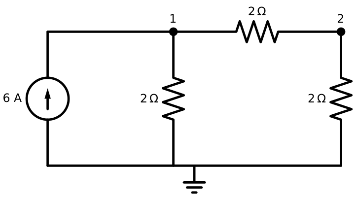
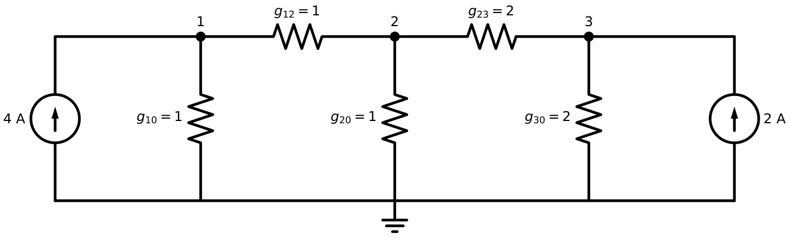
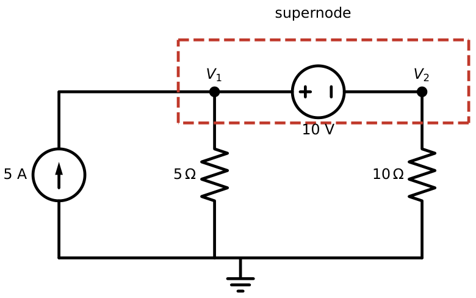
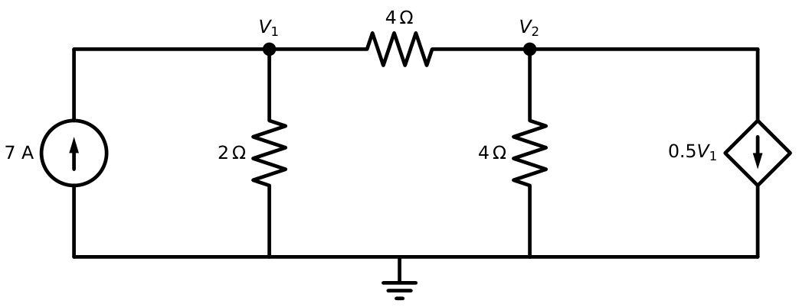

Node-Voltage Analysis
In this chapter
2-mark circuits with 2–3 essential nodes, often with a dependent source or a floating voltage source (supernode). Nodal analysis is the default method when the circuit has fewer nodes than meshes.
2.1 Reference node and essential nodes
A node is a point where two or more elements join. An essential node is one where three or more elements join (nodes that merely join two elements in series add no unknowns). One node is selected as the reference node (ground, \(0\) V); all other node voltages are measured with respect to it. If a circuit has \(n\) nodes we need \(n-1\) equations. Choose as reference the node with the most branches, or the negative terminal of a voltage source: this makes the source’s other end a known node voltage.
2.2 The node-voltage method
- Choose a reference node; label the other \(n-1\) nodes \(V_1,V_2,\ldots\)
- At each non-reference node write KCL, expressing every branch current as (voltage difference)/(resistance) using Ohm’s law.
- Solve the \(n-1\) simultaneous equations.
A \(6\) A source feeds node 1; \(R_1=2\ \Omega\) connects node 1 to ground, \(R_2=2\ \Omega\) connects node 1 to node 2, and \(R_3=2\ \Omega\) connects node 2 to ground (Figure 2.1).
Node 1: \(\dfrac{V_1}{2}+\dfrac{V_1-V_2}{2}=6\). Node 2: \(\dfrac{V_2-V_1}{2}+\dfrac{V_2}{2}=0\).
From node 2: \(V_2=V_1/2\). Substituting: \(V_1-\tfrac14V_1=6\Rightarrow V_1=8\) V, \(V_2=4\) V.
Current through \(R_2\): \((8-4)/2=2\) A; power from the source \(=8\times6=48\) W; check: \(8^2/2+4^2/2+2^2\cdot2=32+8+8=48\) W. ✓

2.3 Matrix formulation and the conductance matrix
For a network of resistors and independent current sources, nodal analysis can be written by inspection as \[\mathbf G\mathbf V=\mathbf I\] with \[G_{kk}=\sum(\text{conductances at node }k),\qquad G_{kj}=-\sum(\text{conductances between nodes }k\text{ and }j),\] \[I_k=\sum(\text{source currents entering node }k).\] \(\mathbf G\) is symmetric when only resistors are present (reciprocal network). The diagonal is positive and dominant.
For the network of Figure 2.2: \(g_{10}=1\) S, \(g_{12}=1\) S, \(g_{20}=1\) S, \(g_{23}=2\) S, \(g_{30}=2\) S; sources \(4\) A into node 1 and \(2\) A into node 3. \[ \begin{bmatrix}2&-1&0\\-1&4&-2\\0&-2&4\end{bmatrix} \begin{bmatrix}V_1\\V_2\\V_3\end{bmatrix}= \begin{bmatrix}4\\0\\2\end{bmatrix} \] From row 1: \(V_1=(4+V_2)/2\); from row 3: \(V_3=(2+2V_2)/4\). Row 2: \(-(2+\tfrac12V_2)+4V_2-(1+V_2)=0\Rightarrow V_2=1.2\) V, \(V_1=2.6\) V, \(V_3=1.1\) V.

2.4 Supernode
When a voltage source (independent or dependent) lies between two non-reference nodes, its current is unknown, so we cannot write KCL at either node separately. Instead:
- Enclose the source and its two nodes in a supernode.
- Write one KCL for the whole supernode (sum of currents leaving it through all other elements \(=0\)).
- Write the constraint equation \(V_a-V_b=V_s\) from the source itself.
A \(5\) A source injects into node 1. \(R_a=5\ \Omega\) connects node 1 to ground, a \(10\) V source has its \(+\) end at node 1 and \(-\) end at node 2, and \(R_b=10\ \Omega\) connects node 2 to ground (Figure 2.3).
Constraint: \(V_1-V_2=10\). Supernode KCL: \(\dfrac{V_1}{5}+\dfrac{V_2}{10}=5\).
\(\dfrac{V_2+10}{5}+\dfrac{V_2}{10}=5\Rightarrow 2V_2+20+V_2=50\Rightarrow V_2=10\) V, \(V_1=20\) V.
Check: the \(5\) A source supplies \(20\times5=100\) W. KCL at node 1 gives the current through the \(10\) V source: \(5-V_1/5=1\) A, flowing from node 1 through the source to node 2 (into its \(+\) terminal), so it absorbs \(10\times1=10\) W. Absorbed total \(=20^2/5+10^2/10+10=80+10+10=100\) W. ✓

2.5 Voltage sources between a node and ground
If a voltage source connects a node to ground, that node’s voltage is known (\(V_k=\pm V_s\)); no KCL is needed there, and you have one fewer unknown. This is why choosing the reference at the source’s negative terminal helps.
2.6 Dependent sources in nodal analysis
Treat a dependent source exactly like an independent one when writing KCL, then add one extra equation that expresses the controlling variable in terms of the node voltages. For a dependent voltage source between two nodes, use the supernode procedure and make the source’s constraint depend on the controlling variable.
\(I_s=7\) A enters node 1; \(R_1=2\ \Omega\) (node 1 to ground); \(R_2=4\ \Omega\) (node 1 to node 2); \(R_3=4\ \Omega\) (node 2 to ground); a dependent current source \(0.5V_1\) (A) draws current from node 2 to ground (Figure 2.4).
Node 1: \(\dfrac{V_1}{2}+\dfrac{V_1-V_2}{4}=7\Rightarrow0.75V_1-0.25V_2=7\).
Node 2: \(\dfrac{V_2-V_1}{4}+\dfrac{V_2}{4}+0.5V_1=0\Rightarrow0.25V_1+0.5V_2=0\Rightarrow V_2=-0.5V_1\).
\(0.75V_1+0.125V_1=7\Rightarrow V_1=8\) V, \(V_2=-4\) V.

Never leave the controlling variable as a new unknown without an extra equation. In the example above, if the control were the current through \(R_2\) you would need \(I_x=(V_1-V_2)/4\) substituted in. Count: unknowns \(=\) equations, always.
2.7 Special cases
- Resistor in series with a current source: the resistor does not enter any KCL at the node where the source drives (the branch current is fixed by the source). The resistor can be dropped when finding node voltages.
- Resistor in parallel with a voltage source: it does not affect the other voltages; it only changes the source current.
- Two supernodes sharing a node: merge into a larger supernode.
- Bridge circuits: if the bridge is balanced the middle element carries no current.
Count first. Nodes \(-1-\)(number of voltage sources to ground)\(-\)(number of floating voltage sources) is the number of independent KCL equations. If this number is smaller than the number of independent loops, use nodal; otherwise use mesh (Chapter 3).
2.8 Nodal analysis with current sources only
With only current sources and resistors, \(\mathbf G\mathbf V=\mathbf I\) is always solvable if the resistive network is connected to the reference, and \(\mathbf G\) is invertible.
Q1. For the conductance matrix of a reciprocal resistive network, which is true? (A) \(G_{12}=-G_{21}\) (B) \(\mathbf G\) symmetric (C) \(G_{kk}<0\) (D) \(\det\mathbf G=0\).
Q2. A \(10\) V ideal source is connected between a node and the reference node. The number of KCL equations saved is (A) 0 (B) 1 (C) 2 (D) depends on \(R\).
Q3. In nodal analysis, a floating ideal voltage source between two non-reference nodes requires (A) a mesh (B) a supernode (C) a Norton equivalent (D) no special action.
Answers: Q1 (B). Q2 (B): that node voltage is known. Q3 (B).
Q4. A \(12\) A source injects into node 1. Between node 1 and ground: \(3\ \Omega\). Between node 1 and node 2: \(6\ \Omega\). Between node 2 and ground: \(3\ \Omega\). Then \(V_2=\) (A) \(6\) V (B) \(9\) V (C) \(12\) V (D) \(27\) V.
Q5. In the supernode example the \(5\) A source is replaced with \(8\) A. Then \(V_1\) is (A) \(40\) V (B) \(30\) V (C) \(60\) V (D) \(20\) V.
Answers: Q4 (B): node 2 gives \((V_2-V_1)/6+V_2/3=0\Rightarrow V_1=3V_2\); node 1: \(V_1/3+(V_1-V_2)/6=12\), i.e. \(V_2+V_2/3=12\), \(V_2=9\) V (\(V_1=27\) V). Q5 (B): \((V_2+10)/5+V_2/10=8\Rightarrow V_2=20\), \(V_1=30\) V.
Q6. In the three-node example, if the \(2\) A source is removed the voltage \(V_3\) becomes V.
Q7. In the VCCS example, the dependent source is changed to \(0.25V_1\) (A) with everything else the same. The value of \(V_2/V_1\) is .
Answers: Q6: \(2V_1-V_2=4\), \(-V_1+4V_2-2V_3=0\), \(-2V_2+4V_3=0\Rightarrow V_3=V_2/2\); then \(V_1=3V_2\), \(6V_2-V_2=4\Rightarrow V_2=0.8\), \(V_3=0.4\) V. Q7: node 2: \(-0.25V_1+0.5V_2+0.25V_1=0\Rightarrow V_2=0\), ratio \(=0\).
Q8. Which of the following are correct for nodal analysis? (A) A supernode needs an extra constraint equation. (B) The conductance matrix of a resistor-only network is symmetric. (C) A voltage source connected between a node and ground removes one unknown. (D) A dependent current source requires no extra equation even if its control variable is a current.
Answers: Q8: (A), (B), (C). (D) is false: a current control variable must be expressed in node voltages.
(i) Writing KCL at a supernode’s two nodes separately (double counting the unknown source current). (ii) Forgetting the constraint equation. (iii) Including a resistor that is in series with a current source. (iv) Wrong sign of the injected current in \(I_k\). (v) Not expressing a dependent source’s control variable in node voltages.
T1. A circuit has \(6\) nodes, one voltage source to ground and one floating voltage source. How many independent KCL equations are needed?
T2. Write the matrix equation for a two-node circuit with \(g_{10}=2\) S, \(g_{12}=1\) S, \(g_{20}=3\) S, \(I_1=5\) A, \(I_2=-1\) A and solve.
Answers: T1: \(6-1-1-1=3\). T2: \(\begin{bmatrix}3&-1\\-1&4\end{bmatrix}\mathbf V=\begin{bmatrix}5\\-1\end{bmatrix}\), \(\det=11\), \(V_1=(20-1)/11=1.727\) V, \(V_2=(-3+5)/11=0.182\) V.
- Pick the reference node with most branches (or at a source terminal). Equations needed: \(n-1\) minus known nodes.
- KCL at node: \(\sum(V_k-V_j)/R_{kj}=\) injected current. By inspection: \(\mathbf G\mathbf V=\mathbf I\), \(G_{kk}>0\), \(G_{kj}<0\).
- Floating voltage source \(\Rightarrow\) supernode: one KCL for the pair plus \(V_a-V_b=V_s\).
- Dependent sources: write KCL as usual, then express the control variable using node voltages.
- Resistor in series with a current source is ignored; resistor in parallel with a voltage source is ignored (for other variables).
- Use nodal if nodes \(<\) meshes.